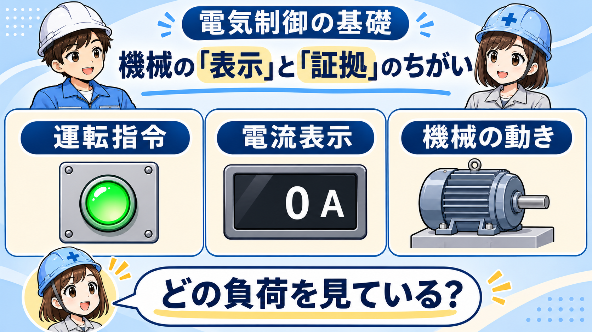
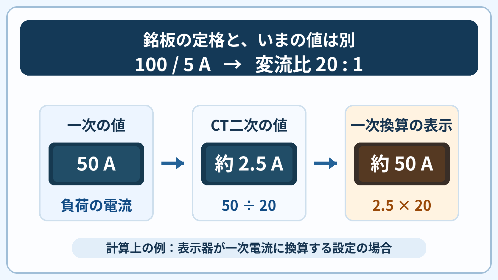
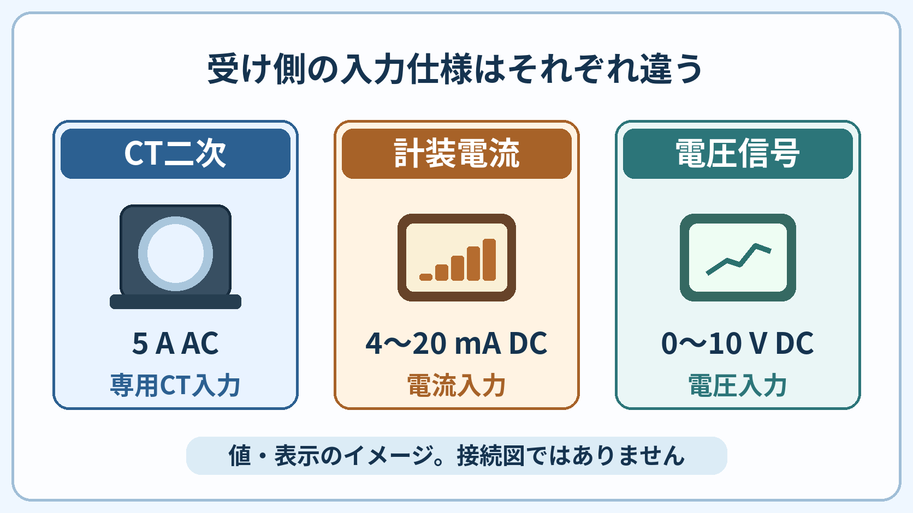

CT・電流センサは何の電流を見ている？
最終内容更新：
モーターの運転指令はONなのに、画面の電流は0 A。このとき、いきなりモーターやセンサの故障と決めず、その表示が、どの負荷・どの相・どの時点の電流かを確かめます。指令は「動かすよう求めている」、電流は「見ている回路にどれほど流れたか」、動作は「機械が実際に動いたか」。三つは別の情報です。

CT（Current Transformer、変流器／電流変成器）は、計器で扱える大きさに交流電流を変える機器です。この記事で「計器用CT」という場合は、二次に交流電流を出す種類を指します。「電流センサ」は電流を検出する機器の広い呼び方なので、CTとの二択ではありません。直流対応や電圧・しきい値を出力する機種などもあります。
計器用CTの二次側は、一次に電流が流れている間は開放しない
二次側に高電圧が発生し、感電や絶縁破壊・焼損のおそれがあります。0 A表示を無電圧の証拠にせず、既設の計器や端子・配線は外しません。盤を開ける、配線を触る、実測する、交換する必要があれば、設備の手順に従える担当者に引き継ぎます。

後輩運転がONなのに0 Aです。モーターが壊れたんでしょうか？

先輩まず、その表示がこのモーター専用か確認しよう。同じ時刻の運転状態も別に見るよ。
銘板100/5 Aと、50 A表示の読み方
計器用CTの100/5 Aは、定格一次電流が100 A、定格二次電流が5 A、変流比が20対1という意味です。もし銘板がアンペアターン（AT）表記や複数の比を持つ機種なら、適用している比は機器資料と既設の図面から確認します。銘板に書かれた電流は定格で、いま流れている値ではありません。

すでに一次換算された「50 A」表示を、もう一度20倍しません。表示がCT入力側の値か、換算後の負荷電流かは計器の仕様、画面の単位・チャンネル名、承認済み設定の記録で確認します。計器誤差、使う周波数、CTと計器・配線を含めた定格負担などの影響があり、比だけが合っても適合するとは限りません。
計器の定格入力と、画面に出す比は別
二次定格5 AのCTと、二次定格1 AのCTは別仕様です。いずれも計器の専用入力の定格・許容条件と照合します。手元の画面でCT比を変えられても、5 A入力と1 A入力や一般のmA入力が同じになるわけではありません。
モーター・ヒーター・ポンプで何が分かる？
| 場面 | 電流から分かること | 別に確かめたいこと |
|---|---|---|
| モーターの運転 | 対象としている回路に電流が流れたか。 | 実際に回ったかは、既設の速度や動作の記録で確認。電流があっても回転を保証しません。 |
| 負荷の増加 | 同じ速度・負荷条件の通常値に比べて増えたか。 | 始動直後なのか、定常運転中なのか。しきい値は対象機器・工程の基準で見る。 |
| ヒーターの断線検出 | 加熱指令中に、監視している回路の電流がいつもより小さいか。 | 温調によるOFF区間ではないか、監視が枝ごとか全体か。電流低下だけでは断線箇所は分かりません。 |
| ポンプ・ファンの監視 | 同じ運転条件で電流の変化が続くか。 | 空回り・詰まりなどを電流だけで当てず、流量や圧力など別の記録と照合。 |
5 Aと4～20 mAは、どちらも電流でも別の入力

| 出力・信号の例 | 何を照合する？ |
|---|---|
| 計器用CT：5 A AC／1 A AC | 専用入力の二次定格、変流比、周波数、定格負担など。5 A ACをPLCの一般的な4～20 mA DC入力へ直接入れるものではありません。 |
| 電圧・計装電流：V DC／mA DC | センサや変換器の出力方式・範囲、受け側の入力種別、電源条件、PLCや画面での換算。出力の単位がそのまま負荷電流ではありません。 |
| 接点・トランジスタ・通信 | しきい値でON/OFFする出力は、その状態だけでは電流値を示しません。通信機種は取得データ・単位・更新状態も照合します。 |
たとえばエムティティのMS3420には、1 A AC／5 A ACの入力と、4～20 mAや0～10 Vなどの出力仕様があります。これは計器用CTとアナログ入力の間に信号を変える専用機器がある例です。適合は型式の組み合わせごとに確認します。
貫通・分割クランプ・基板取付などの形状だけでは、交流専用か直流対応か、CT二次電流か電圧出力かを判別できません。製品名に「CT」とあってもホール素子などの製品があり、型式別仕様が基準です。
表示が想定と違うとき、次に見る情報を分ける
電力が通る経路と、表示へ情報が届く経路は別です。前者にはモーターを駆動する接触器やインバータなど、後者にはCTまたはセンサ、対応する計器・変換器・PLC、監視画面などが関わります。まず安全な位置の既設表示や履歴、手元の図面・設定記録だけを使います。
| 同じ時刻に見えたこと | 次に照合する情報 |
|---|---|
| 指令ON、回転の記録もなく、電流表示も0 A | 対象・相・時刻を合わせたうえで、運転許可、駆動機器の状態、異常履歴など指令の先を確認。0 Aだけで負荷やCTを故障としない。 |
| 動作記録はあるのに、対象とされる電流表示だけ変わらない | 監視チャンネル、表示更新や通信状態、CT比、入力規格、換算設定、図面上の検出位置を照合。設備を変更せず、観察結果を引き継ぐ。 |
| 電流表示はあるが、動作記録は変わらない | 表示している電流の対象を確認し、速度・位置・制御状態も別に見る。電流は回転や製品の移動を保証しない。 |
後輩現場の表示器は値が動いているのに、監視画面だけ止まっています。
先輩同じ負荷・相・時刻と確認できたなら、画面までの信号や更新履歴を見てみよう。
図面と記録で確認すること、安全の境界
設備全体、個別の負荷、ある相の電線では、表示の意味が違います。単相の往きと戻りなど、互いに反対向きの電流を同じ窓で見れば、磁界が打ち消し合い、負荷には電流が流れていても小さく見えます。一括して漏れ電流を見る目的とは別です。検出位置、相・向き、何本を対象とするかは、設備図面と型式資料で確認し、現場で線を通し直したり、機器を開けたりはしません。
CT比や警報値は記録と照合するだけにし、値が合わないからと設定を変えません。記録がない、焦げや異臭がある、停止や実測が必要などの場合は設備の異常時手順・担当者へ。インバータ出力など通常と波形や周波数が異なる場所では、使える検出器の条件も機種ごとに確認します。
メーカー公式資料
公式資料確認：。仕様、選定、保守は実際の型式・設備の承認済み図面と手順を優先してください。
- 富士電機テクニカ「貫通形変流器の定格電流の読み方」：100AT/5 Aの例と、銘板に定格と適用条件があること。
- 富士電機テクニカ「CT二次電流の5 A品と1 A品の違い」：二次電流と対応する計器。
- 富士電機テクニカ「計器用CTの二次側を開放してはいけない理由」：一次電流が流れているときの高電圧・絶縁破壊。
- 三菱電機「CT併用計器の見分け方」：計器側の定格と変流比の表示。
- エムティティ「実効値演算型CT変換器 MS3420」：用途別の入力・出力仕様の例。
- 津田電気計器「電流検出器」：直流計測と出力の機種例。
- 日置電機「ACリーククランプメータ CM4002/CM4003 取扱説明書」：負荷電流と漏れ電流を対象とするときの区別。
まとめ：何の電流を、何に換算した表示かを確かめる
指令・電流・実際の動きは別物です。表示に違和感があれば、対象の負荷・相・時刻を揃え、CT銘板、受け側の規格、換算の有無を記録で照合します。一次に電流が流れている計器用CTの二次側は開放せず、触る必要があるときは担当者へ引き継ぎます。